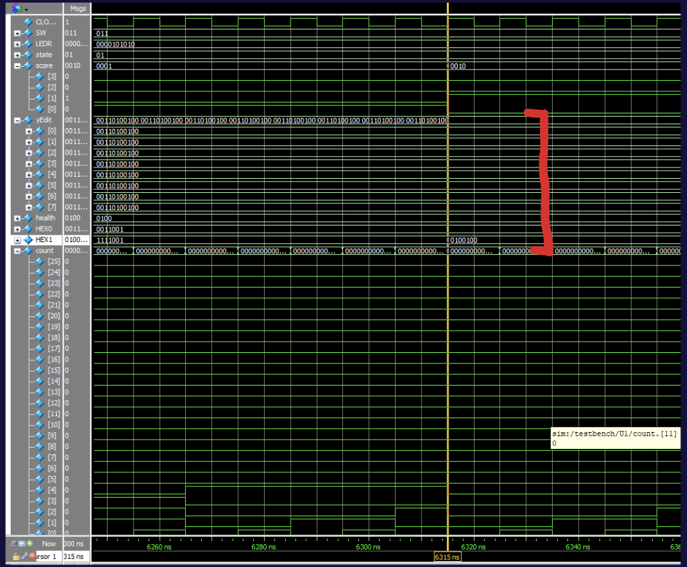

I used ModelSim to test our Verilog. Here is an example.
This simulation shows the successful generation of multiple fruits.
yEdit is an array of 8 11-bit numbers that represents the coordinate of all 8 fruits. It was important to establish that the fruits generated properly before attempting to print them on the monitor with the vga.